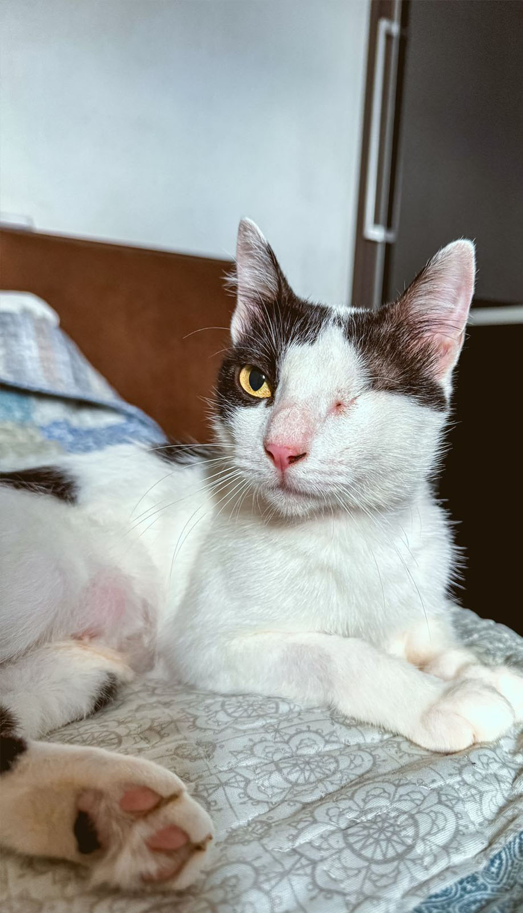

LUZIA
Gato | Fêmea | 2 anos | castrado(a) | vacinado(a)
DESCRIÇÃO: Luzia chegou até nós através de um pedido de ajuda, onde a pessoa que pediu ajuda relatava que tinha um “monstro” em sua casa. Quando fomos resgatar, descobrimos que esse “monstro”, na verdade é uma linda princesa assustada e muito carinhosa!